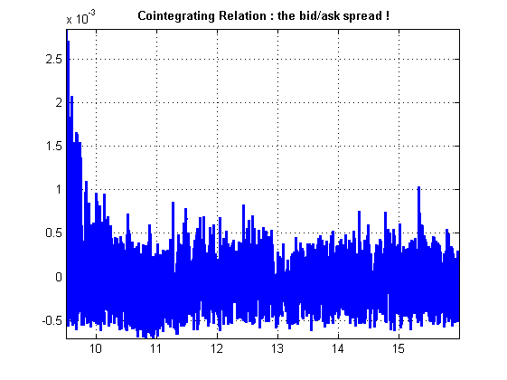
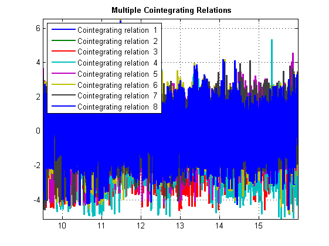
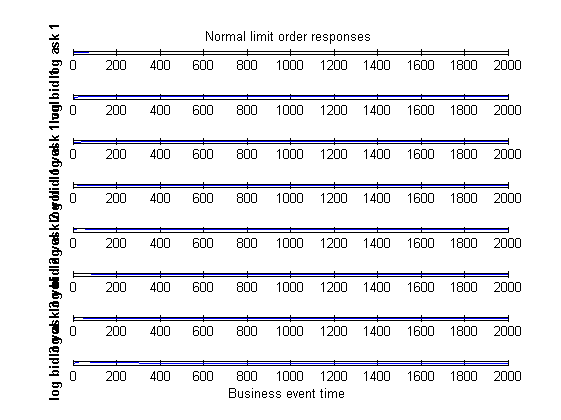
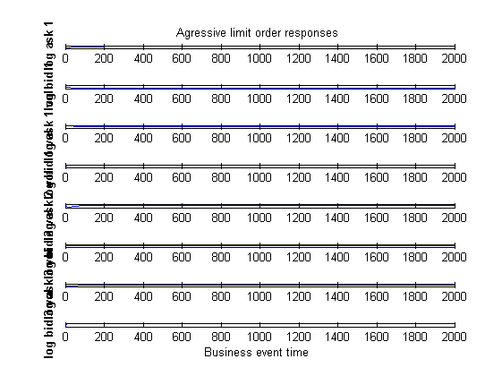
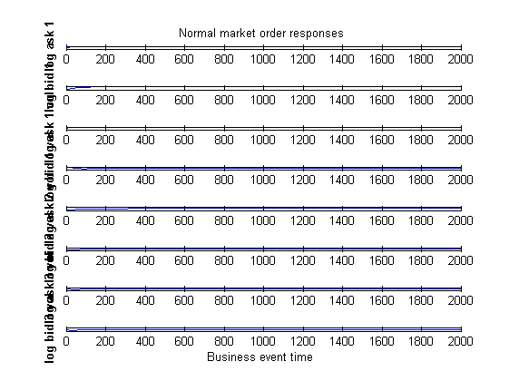
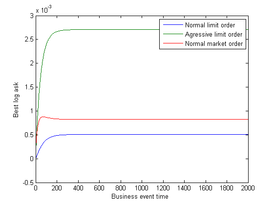
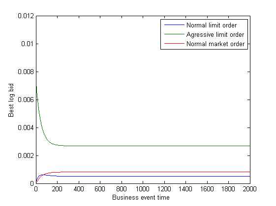

<!DOCTYPE html
  PUBLIC "-//W3C//DTD HTML 4.01 Transitional//EN">
<html><head>
      <meta http-equiv="Content-Type" content="text/html; charset=utf-8">
   <!--
This HTML was auto-generated from MATLAB code.
To make changes, update the MATLAB code and republish this document.
      --><title>VAR_modeling_script</title><meta name="generator" content="MATLAB 8.1"><link rel="schema.DC" href="http://purl.org/dc/elements/1.1/"><meta name="DC.date" content="2013-08-27"><meta name="DC.source" content="VAR_modeling_script.m"><style type="text/css">
html,body,div,span,applet,object,iframe,h1,h2,h3,h4,h5,h6,p,blockquote,pre,a,abbr,acronym,address,big,cite,code,del,dfn,em,font,img,ins,kbd,q,s,samp,small,strike,strong,sub,sup,tt,var,b,u,i,center,dl,dt,dd,ol,ul,li,fieldset,form,label,legend,table,caption,tbody,tfoot,thead,tr,th,td{margin:0;padding:0;border:0;outline:0;font-size:100%;vertical-align:baseline;background:transparent}body{line-height:1}ol,ul{list-style:none}blockquote,q{quotes:none}blockquote:before,blockquote:after,q:before,q:after{content:'';content:none}:focus{outine:0}ins{text-decoration:none}del{text-decoration:line-through}table{border-collapse:collapse;border-spacing:0}

html { min-height:100%; margin-bottom:1px; }
html body { height:100%; margin:0px; font-family:Arial, Helvetica, sans-serif; font-size:10px; color:#000; line-height:140%; background:#fff none; overflow-y:scroll; }
html body td { vertical-align:top; text-align:left; }

h1 { padding:0px; margin:0px 0px 25px; font-family:Arial, Helvetica, sans-serif; font-size:1.5em; color:#d55000; line-height:100%; font-weight:normal; }
h2 { padding:0px; margin:0px 0px 8px; font-family:Arial, Helvetica, sans-serif; font-size:1.2em; color:#000; font-weight:bold; line-height:140%; border-bottom:1px solid #d6d4d4; display:block; }
h3 { padding:0px; margin:0px 0px 5px; font-family:Arial, Helvetica, sans-serif; font-size:1.1em; color:#000; font-weight:bold; line-height:140%; }

a { color:#005fce; text-decoration:none; }
a:hover { color:#005fce; text-decoration:underline; }
a:visited { color:#004aa0; text-decoration:none; }

p { padding:0px; margin:0px 0px 20px; }
img { padding:0px; margin:0px 0px 20px; border:none; }
p img, pre img, tt img, li img { margin-bottom:0px; } 

ul { padding:0px; margin:0px 0px 20px 23px; list-style:square; }
ul li { padding:0px; margin:0px 0px 7px 0px; }
ul li ul { padding:5px 0px 0px; margin:0px 0px 7px 23px; }
ul li ol li { list-style:decimal; }
ol { padding:0px; margin:0px 0px 20px 0px; list-style:decimal; }
ol li { padding:0px; margin:0px 0px 7px 23px; list-style-type:decimal; }
ol li ol { padding:5px 0px 0px; margin:0px 0px 7px 0px; }
ol li ol li { list-style-type:lower-alpha; }
ol li ul { padding-top:7px; }
ol li ul li { list-style:square; }

.content { font-size:1.2em; line-height:140%; padding: 20px; }

pre, tt, code { font-size:12px; }
pre { margin:0px 0px 20px; }
pre.error { color:red; }
pre.codeinput { padding:10px; border:1px solid #d3d3d3; background:#f7f7f7; }
pre.codeoutput { padding:10px 11px; margin:0px 0px 20px; color:#4c4c4c; }

@media print { pre.codeinput, pre.codeoutput { word-wrap:break-word; width:100%; } }

span.keyword { color:#0000FF }
span.comment { color:#228B22 }
span.string { color:#A020F0 }
span.untermstring { color:#B20000 }
span.syscmd { color:#B28C00 }

.footer { width:auto; padding:10px 0px; margin:25px 0px 0px; border-top:1px dotted #878787; font-size:0.8em; line-height:140%; font-style:italic; color:#878787; text-align:left; float:none; }
.footer p { margin:0px; }
.footer a { color:#878787; }
.footer a:hover { color:#878787; text-decoration:underline; }
.footer a:visited { color:#878787; }

table th { padding:7px 5px; text-align:left; vertical-align:middle; border: 1px solid #d6d4d4; font-weight:bold; }
table td { padding:7px 5px; text-align:left; vertical-align:top; border:1px solid #d6d4d4; }


  </style></head><body><div class="content"><h2>Contents</h2><div><ul><li><a href="#1">Loading preprocessed time series</a></li><li><a href="#2">Engel Granger cointegrating test</a></li><li><a href="#3">VEC coefficient estimation through ordinary least squares</a></li><li><a href="#4">Limitations of Engle Granger tests</a></li><li><a href="#5">Johansen test</a></li><li><a href="#6">Impulse Response Analysis</a></li><li><a href="#7">First scenario : normal limit order</a></li><li><a href="#8">Second scenario : aggressive limit order</a></li><li><a href="#9">Third scenario : normal market order</a></li><li><a href="#10">Plotting together the 3 scenarii</a></li></ul></div><h2>Loading preprocessed time series<a name="1"></a></h2><pre class="codeinput">clear <span class="string">all</span>;close <span class="string">all</span>;clc;
load(<span class="string">'preprocessed_time_series.mat'</span>);
nb_variables=8;
</pre><h2>Engel Granger cointegrating test<a name="2"></a></h2><p>now the turning point : the differenced series is now stationary but if there is cointegration between the integrated series, modeling it as an ARIMA is a misspecification, which brings poor forecasts, value at risk and so on Differencing removes the levels information and cointegration lies in the model So here be cautious and do some more tests to see if the series are cointegrated first : the Engle-Granger test we regress one arbitrarily chosen coordinate against the others Y(:,1)=Y(:,2:end)*b+X*a+e and we test the residuals for the presence of a unit root</p><pre class="codeinput">[h,pValue,stat,cValue] = egcitest(Y,<span class="string">'test'</span>,{<span class="string">'t1'</span>,<span class="string">'t2'</span>})
[~,~,~,~,reg] = egcitest(Y,<span class="string">'test'</span>,<span class="string">'t2'</span>);
<span class="comment">% Visualizing the cointegrating relation</span>
<span class="comment">% We get the cointegrating vector from the Engle-Granger test</span>
c0 = reg.coeff(1);
b = reg.coeff(2:nb_variables);
figure;
plot(timestamps/(60.*60),Y*[1;-b]-c0,<span class="string">'LineWidth'</span>,2)
title(<span class="string">'{\bf Cointegrating Relation : the bid/ask spread !}'</span>)
axis <span class="string">tight</span>
grid <span class="string">on</span>
</pre><pre class="codeoutput">Warning: Test statistic #1 below tabulated critical values:
minimum p-value = 0.001 reported. 
Warning: Sample size of the data
is more than the maximum size 10000
in the table of critical values.
Using critical value -5.2314 at
maximum size for the test. Compare
asymptotic critical value -5.2291. 
Warning: Test statistic #2 below tabulated critical values:
minimum p-value = 0.001 reported. 
Warning: Sample size of the data
is more than the maximum size 10000
in the table of critical values.
Using critical value -53.7764 at
maximum size for the test. Compare
asymptotic critical value -53.8681. 

h =

     1     1


pValue =

   1.0e-03 *

    1.0000    1.0000


stat =

   1.0e+04 *

   -0.0073   -1.0438


cValue =

   -5.2314  -53.7764

Warning: Test statistic #1 below tabulated critical values:
minimum p-value = 0.001 reported. 
Warning: Sample size of the data
is more than the maximum size 10000
in the table of critical values.
Using critical value -53.7764 at
maximum size for the test. Compare
asymptotic critical value -53.8681. 
</pre> <h2>VEC coefficient estimation through ordinary least squares<a name="3"></a></h2><p>once the cointegrating relation has been established, we can build a Vector Error Correction Model (or a cointegrated VAR model)</p><pre class="codeinput">q = 2;
[numObs,numDims] = size(Y);
tBase = (q+2):numObs; <span class="comment">% Commensurate time base, all lags</span>
T = length(tBase); <span class="comment">% Effective sample size</span>
YLags = lagmatrix(Y,0:(q+1)); <span class="comment">% Y(t-k) on observed time base</span>
LY = YLags(tBase,(numDims+1):2*numDims);
<span class="comment">% Y(t-1) on commensurate time base</span>

<span class="comment">% Form multidimensional differences so that</span>
<span class="comment">% the kth numDims-wide block of</span>
<span class="comment">% columns in DelatYLags contains (1-L)Y(t-k+1):</span>

DeltaYLags = zeros(T,(q+1)*numDims);
<span class="keyword">for</span> k = 1:(q+1)
    DeltaYLags(:,((k-1)*numDims+1):k*numDims) = <span class="keyword">...</span>
        YLags(tBase,((k-1)*numDims+1):k*numDims) <span class="keyword">...</span>
        - YLags(tBase,(k*numDims+1):(k+1)*numDims);
<span class="keyword">end</span>

DY = DeltaYLags(:,1:numDims); <span class="comment">% (1-L)Y(t)</span>
DLY = DeltaYLags(:,(numDims+1):end); <span class="comment">% [(1-L)Y(t-1),...,(1-L)Y(t-q)]</span>

<span class="comment">% Perform the regression:</span>
X = [(LY*[1;-b]-c0),DLY,ones(T,1)];
P = (X\DY)'; <span class="comment">% [a,B1,...,Bq,c1]</span>
a = P(:,1);
B1 = P(:,2:9);
B2 = P(:,10:17);
c1 = P(:,end);

<span class="comment">% Display model coefficients</span>
a,b,c0,B1,B2,c1

<span class="comment">% Residual computation of the ordinary least square computation</span>
<span class="comment">% we compute the residuals to estimate the covariance matrix</span>
<span class="comment">% for a Monte-Carlo simulation</span>
res = DY-X*P';
EstCov = cov(res);
</pre><pre class="codeoutput">
a =

   -0.0106
    0.0154
  -23.0187
  -15.0781
   -1.3254
   -8.2205
   10.4778
  -17.6462


b =

    1.0072
   -0.0000
   -0.0000
   -0.0000
   -0.0000
    0.0000
   -0.0000


c0 =

   -0.0379


B1 =

  Columns 1 through 7

   -0.2055    0.0049   -0.0000    0.0000   -0.0000    0.0000   -0.0000
    0.0174   -0.2513   -0.0000    0.0000    0.0000    0.0000    0.0000
 -295.2598  -21.6649   -0.1905   -0.0005    0.0051   -0.0016   -0.0109
  -10.3615  153.8777   -0.0017   -0.2113   -0.0009    0.0252    0.0016
 -138.0373    5.2452    0.0240    0.0026   -0.1774   -0.0007    0.0451
  -17.2022  -28.7821   -0.0012    0.0131   -0.0060   -0.2091    0.0014
 -102.2524  -13.9571   -0.0057   -0.0021    0.0125    0.0047   -0.1984
  -15.1427   27.3636    0.0011   -0.0177    0.0013    0.0214   -0.0073

  Column 8

    0.0000
    0.0000
   -0.0025
   -0.0106
   -0.0010
    0.0390
    0.0002
   -0.2227


B2 =

  Columns 1 through 7

   -0.0220    0.0001   -0.0000    0.0000   -0.0000    0.0000    0.0000
    0.0165   -0.0991    0.0000    0.0000    0.0000   -0.0000    0.0000
  145.2358  -47.8054   -0.0670   -0.0020    0.0178   -0.0022   -0.0009
   -6.6929    5.2129   -0.0020   -0.0395   -0.0022    0.0142    0.0006
   66.3598  -16.9466    0.0036   -0.0031   -0.0272   -0.0017    0.0141
   -5.9076 -133.4214    0.0029    0.0043   -0.0012   -0.0405   -0.0010
  -33.4806   21.3101   -0.0154   -0.0040    0.0067    0.0018   -0.0429
 -103.3630   74.5992   -0.0026   -0.0086    0.0000   -0.0001   -0.0026

  Column 8

   -0.0000
   -0.0000
   -0.0043
    0.0042
   -0.0003
    0.0196
    0.0016
   -0.0733


c1 =

   1.0e-04 *

   -0.0007
   -0.0007
   -0.1196
    0.1895
    0.1095
   -0.1105
   -0.0402
    0.0457

</pre><h2>Limitations of Engle Granger tests<a name="4"></a></h2><p>The procedure of the Engle-Granger has a lot of drawbacks first of all : we detect just one cointegrating relation at a time and this arbitrarily following the chosen variable to be regressed for The test is then in two phases : an ordinary least-square regression and an augmented Dickey-Fueller unit root test (the unit root test is not on an observed serie but on an estimated serie, and a proper distribution for the test must be used (z and tau statistics)). And once the test is done and positive, you still have to estimate the VEC model coefficients : a third step</p><pre class="codeinput">P0 = perms(1:nb_variables);
[~,idx] = unique(P0(:,1)); <span class="comment">% Rows of P0 with unique regressand y1</span>
P = P0(idx,:); <span class="comment">% Unique regressions</span>
numPerms = size(P,1);
<span class="comment">% Preallocate:</span>
T0 = size(Y,1);
H = zeros(1,numPerms);
PVal = zeros(1,numPerms);
CIR = zeros(T0,numPerms);
<span class="comment">% Run all tests:</span>
<span class="keyword">for</span> i = 1:numPerms
    YPerm = Y(:,P(i,:));
    [h,pValue,~,~,reg] = egcitest(YPerm,<span class="string">'test'</span>,<span class="string">'t2'</span>);
    H(i) = h;
    PVal(i) = pValue;
    c0i = reg.coeff(1);
    bi = reg.coeff(2:nb_variables);
    CIR(:,i) = YPerm*[1;-bi]-c0i;
<span class="keyword">end</span>
<span class="comment">% Display the test results:</span>
H,PVal
<span class="comment">% Plot the cointegrating relations:</span>
plot(timestamps/(60.*60),CIR,<span class="string">'LineWidth'</span>,2)
title(<span class="string">'{\bf Multiple Cointegrating Relations}'</span>)
legend(strcat({<span class="string">'Cointegrating relation  '</span>}, <span class="keyword">...</span>
    num2str((1:numPerms)')),<span class="string">'location'</span>,<span class="string">'NW'</span>);
axis <span class="string">tight</span>
grid <span class="string">on</span>
</pre><pre class="codeoutput">Warning: Test statistic #1 below tabulated critical values:
minimum p-value = 0.001 reported. 
Warning: Sample size of the data
is more than the maximum size 10000
in the table of critical values.
Using critical value -53.7764 at
maximum size for the test. Compare
asymptotic critical value -53.8681. 
Warning: Test statistic #1 below tabulated critical values:
minimum p-value = 0.001 reported. 
Warning: Sample size of the data
is more than the maximum size 10000
in the table of critical values.
Using critical value -53.7764 at
maximum size for the test. Compare
asymptotic critical value -53.8681. 
Warning: Test statistic #1 below tabulated critical values:
minimum p-value = 0.001 reported. 
Warning: Sample size of the data
is more than the maximum size 10000
in the table of critical values.
Using critical value -53.7764 at
maximum size for the test. Compare
asymptotic critical value -53.8681. 
Warning: Test statistic #1 below tabulated critical values:
minimum p-value = 0.001 reported. 
Warning: Sample size of the data
is more than the maximum size 10000
in the table of critical values.
Using critical value -53.7764 at
maximum size for the test. Compare
asymptotic critical value -53.8681. 
Warning: Test statistic #1 below tabulated critical values:
minimum p-value = 0.001 reported. 
Warning: Sample size of the data
is more than the maximum size 10000
in the table of critical values.
Using critical value -53.7764 at
maximum size for the test. Compare
asymptotic critical value -53.8681. 
Warning: Test statistic #1 below tabulated critical values:
minimum p-value = 0.001 reported. 
Warning: Sample size of the data
is more than the maximum size 10000
in the table of critical values.
Using critical value -53.7764 at
maximum size for the test. Compare
asymptotic critical value -53.8681. 
Warning: Test statistic #1 below tabulated critical values:
minimum p-value = 0.001 reported. 
Warning: Sample size of the data
is more than the maximum size 10000
in the table of critical values.
Using critical value -53.7764 at
maximum size for the test. Compare
asymptotic critical value -53.8681. 
Warning: Test statistic #1 below tabulated critical values:
minimum p-value = 0.001 reported. 
Warning: Sample size of the data
is more than the maximum size 10000
in the table of critical values.
Using critical value -53.7764 at
maximum size for the test. Compare
asymptotic critical value -53.8681. 

H =

     1     1     1     1     1     1     1     1


PVal =

   1.0e-03 *

  Columns 1 through 7

    1.0000    1.0000    1.0000    1.0000    1.0000    1.0000    1.0000

  Column 8

    1.0000

</pre> <h2>Johansen test<a name="5"></a></h2><p>More a framework than a test results for different lags (rows) and different ranks (column) results for VEC(2) parameters estimation</p><pre class="codeinput">[~,~,~,~,mles] = jcitest(Y,<span class="string">'model'</span>,<span class="string">'H1*'</span>,<span class="string">'lags'</span>,2);
c0=mles.r7.paramVals.c0;
B=mles.r7.paramVals.B;
A=mles.r7.paramVals.A;
B1=mles.r7.paramVals.B1;
B2=mles.r7.paramVals.B2;
C=A*B';
VEC = {eye(nb_variables) B1 B2};
VAR=vectovar(VEC,C);
a=A*c0;
armodel = vgxset(<span class="string">'a'</span>,a,<span class="string">'AR'</span>,VAR(2:end),<span class="string">'Q'</span>,mles.r7.EstCov);
vgxdisp(armodel);
</pre><pre class="codeoutput">Warning: Test statistic #1 above tabulated critical values:
minimum p-value = 0.001 reported. 
Warning: Test statistic #2 above tabulated critical values:
minimum p-value = 0.001 reported. 
Warning: Test statistic #3 above tabulated critical values:
minimum p-value = 0.001 reported. 
Warning: Test statistic #4 above tabulated critical values:
minimum p-value = 0.001 reported. 
Warning: Test statistic #5 above tabulated critical values:
minimum p-value = 0.001 reported. 
Warning: Test statistic #6 above tabulated critical values:
minimum p-value = 0.001 reported. 
Warning: Test statistic #7 above tabulated critical values:
minimum p-value = 0.001 reported. 

************************
Results Summary (Test 1)

Data: Y
Effective sample size: 269745
Model: H1*
Lags: 2
Statistic: trace
Significance level: 0.05

r  h  stat      cValue   pValue   eigVal   
========================================
0  1  48067.5502 169.6023 0.0010   0.0455  
1  1  35500.5286 134.6809 0.0010   0.0443  
2  1  23269.0694 103.8476 0.0010   0.0274  
3  1  15769.6693 76.9721  0.0010   0.0236  
4  1  9324.8840 54.0779  0.0010   0.0131  
5  1  5764.8106 35.1929  0.0010   0.0125  
6  1  2376.4699 20.2619  0.0010   0.0088  
7  0  1.6687    9.1644   0.8422   0.0000  
  Model  : 8-D VAR(3) with Additive Constant
           Conditional mean is not AR-stable and is MA-invertible
  a Constant:
    -0.000445881
     0.000661824
         3.39195
        0.323588
        -3.28401
         2.66769
        0.461551
         5.99373
  AR(1) Autoregression Matrix:
        0.782866      0.0152057   -3.21065e-06   -4.98319e-08    -1.0889e-06    1.16684e-07    3.71938e-08    8.57225e-08 
       0.0321192       0.732601    -3.9775e-07    3.64795e-06    7.67682e-08    1.18059e-06   -1.79138e-07    2.11077e-07 
        -358.175       -15.2341        0.78318    -0.00148161      0.0131917    -0.00122502     -0.0115259    -0.00244526 
        -10.7119         186.13    -0.00243059       0.767451   -0.000843813      0.0332791     0.00240749     -0.0114923 
        -144.903        8.62178      0.0338686     0.00270011       0.793526   -0.000426743      0.0598327   -0.000890529 
        -21.0747       -14.2416   -0.000585148      0.0214946    -0.00575105       0.761652    0.000594832      0.0536745 
        -61.7226       -25.8521    -0.00594348    -0.00116221      0.0263744     0.00389472       0.768049   -5.56131e-05 
         -33.378         25.746    0.000928943     -0.0175598     0.00112974      0.0358467    -0.00706277        0.74309 
  AR(2) Autoregression Matrix:
        0.183374    -0.00488227    3.67288e-07    3.61265e-07    1.05752e-06    1.63352e-07    4.62863e-07   -2.22248e-07 
    -0.000956342       0.152023    5.63056e-07   -2.33765e-06    3.41596e-07   -1.36605e-06    8.68682e-08   -4.11625e-07 
         428.151       -26.2564       0.114488    -0.00179773      0.0169141     -0.0002545     0.00961514    -0.00176433 
         2.41847       -143.524   -0.000454631       0.163104    -0.00126913    -0.00681101   -0.000723975      0.0139138 
          204.23       -21.3419     -0.0165424    -0.00566192       0.138448    -0.00131783     -0.0243957    0.000804739 
         11.7635       -105.976     0.00422998    -0.00377544      0.0048064       0.155897    -0.00245395      -0.011657 
         70.2779        34.0952     -0.0103937    -0.00156699     0.00103376    -0.00282849       0.142532       0.001389 
        -87.5836        46.7813    -0.00354158     0.00720482    -0.00131967     -0.0139635     0.00425831       0.134622 
  AR(3) Autoregression Matrix:
       0.0230929    0.000427896    1.75152e-06   -1.36616e-07    1.27004e-07   -3.06749e-07   -1.74701e-07    9.00047e-08 
       -0.015714      0.0998027   -4.64906e-07   -2.49168e-08   -4.53832e-07    2.65911e-07   -1.49127e-07    7.89633e-08 
        -94.9411        65.8594      0.0431348     0.00162114    -0.00516196     0.00268296     0.00373351     0.00396059 
        -8.16351       -26.1838     0.00163056      0.0206599     0.00223058    -0.00275792     0.00057458    -0.00275424 
        -60.8281        14.8418     0.00348052     0.00351213    -0.00495511     0.00135118    -0.00223943    0.000143696 
         1.81006        127.238    -0.00230016     0.00156226     0.00188567     0.00944809    6.60759e-05    -0.00629268 
         3.72017       -20.5744      0.0140311     0.00413518     0.00836218    -0.00185924      0.0105657   -0.000767486 
         102.636       -55.2695     0.00303666      0.0077767   -0.000827149      0.0147653     0.00160738      0.0395271 
  Q Innovations Covariance:
      1.5805e-09    2.34021e-11    1.55187e-06   -7.90117e-09   -8.63997e-07     2.8513e-09    5.95334e-07   -1.63374e-08 
     2.34021e-11    2.43009e-09    -3.0793e-08    -1.1313e-06    1.46297e-08    1.38838e-06   -2.06879e-08   -5.93301e-07 
     1.55187e-06    -3.0793e-08       0.243473   -0.000214605     -0.0766077    0.000174379    -0.00227885   -0.000130603 
    -7.90117e-09    -1.1313e-06   -0.000214605       0.184731    5.13741e-05     -0.0763503    0.000142625     0.00494615 
    -8.63997e-07    1.46297e-08     -0.0766077    5.13741e-05       0.267674   -0.000296079     -0.0875638    0.000192359 
      2.8513e-09    1.38838e-06    0.000174379     -0.0763503   -0.000296079       0.255828    0.000213937      -0.100544 
     5.95334e-07   -2.06879e-08    -0.00227885    0.000142625     -0.0875638    0.000213937       0.282183   -0.000510317 
    -1.63374e-08   -5.93301e-07   -0.000130603     0.00494615    0.000192359      -0.100544   -0.000510317       0.283312 
</pre><h2>Impulse Response Analysis<a name="6"></a></h2><p>An impulse response analysis provides a <i>ceteris paribus</i> sensitivity analysis of the dynamics of a system. The following plot shows the projected dynamic responses of each time series along each column in reaction to a 1 standard deviation impulse along each row. The units for each plot are percentage deviations from the initial state for each time series. Last order book observation : [220.640000000000 100 220.510000000000 249 220.650000000000 1290 220.500000000000 71 220.670000000000 170 220.480000000000 700 220.710000000000 1800 220.470000000000 100 220.740000000000 800 220.460000000000 1704 220.750000000000 100 220.450000000000 200 220.760000000000 100 220.440000000000 800 220.790000000000 2300 220.430000000000 2300 220.800000000000 3100 220.420000000000 100 220.810000000000 1700 220.410000000000 3300] and the log matching observation Y(end,:) [5.39653241404499 5.39594304533248 4.60517018598809 5.51745289646471 7.16239749735572 4.26267987704132 5.13579843705026 6.55108033504340] log best ask price : ln(220.64) log best bid price : ln(220.51) log best ask volume : ln(100) log best bid volume : ln(249) log second depth ask volume : ln(1290) log second depth bid volume : ln(71) log third depth ask volume : ln(170) log third depth bid volume : ln(700) [ln(220.64),ln(220.51),ln(100),ln(249),ln(1290),ln(71),ln(170),ln(700)]</p><pre class="codeinput">variable_names={<span class="string">'log ask 1'</span>,<span class="keyword">...</span>
    <span class="string">'log bid 1'</span>,<span class="keyword">...</span>
    <span class="string">'log ask 1 vol'</span>,<span class="keyword">...</span>
    <span class="string">'log bid 1 vol'</span>,<span class="keyword">...</span>
    <span class="string">'log ask 2 vol'</span>,<span class="keyword">...</span>
    <span class="string">'log bid 2 vol'</span>,<span class="keyword">...</span>
    <span class="string">'log ask 3 vol'</span>,<span class="keyword">...</span>
    <span class="string">'log bid 3 vol'</span>};
<span class="comment">% predicting time (for the next 2000 order event)</span>
Fw=2000;
</pre><h2>First scenario : normal limit order<a name="7"></a></h2><p>arrival of a buy limit order with price 220.51 (current best bid) and size 125 (half the current size 249) to be placed at the market. this order will be consolidated at the best bid without changing the prevailing quotes. Because the initial depth on the first level is 250, the log depth becomes ln(375) . v = [0,0,0,log(375)-log(249),0,0,0,0]';</p><pre class="codeinput">W0 = zeros(Fw, nb_variables);
WX = zeros(Fw, nb_variables);
WX(1,:)=[0,0,0,(log(375)-log(249)),0,0,0,0]';
YX = 100*(vgxproc(armodel, WX, [], Y) - vgxproc(armodel, W0, [], Y));
<span class="keyword">for</span> i = 1:nb_variables
    subplot(nb_variables,1,i);
    plot(YX(:,i));
    ylabel([<span class="string">'\bf '</span> variable_names{i}]);
    <span class="keyword">if</span> (i==nb_variables)
        xlabel(<span class="string">'Business event time '</span>)
    <span class="keyword">end</span>
    <span class="keyword">if</span> (i==1)
        title(<span class="string">'Normal limit order responses '</span>)
    <span class="keyword">end</span>
<span class="keyword">end</span>
</pre> <h2>Second scenario : aggressive limit order<a name="8"></a></h2><p>arrival of a buy limit order with price 220.5321 and size 150 improving the best bid and changing all depth levels on the bid side of the order book and size 0.5 to be posted inside of the current spread. Figure 3 shows that it improves the best bid by 0.1% and accordingly shifts all depth levels on the bid side. The resulting shock vector is given by  [ln(220.64),ln(220.51),ln(100),ln(249),ln(1290),ln(71),ln(170),ln(700)] v=[0,log(220.5321)-log(220.51),0,(log(125)-log(249)),0,log(249)-log(71),0,log(71)-log(700)]';</p><pre class="codeinput">W0 = zeros(Fw, nb_variables);
WX = zeros(Fw, nb_variables);
WX(1,:)=[0,log(220.5321)-log(220.51),0,(log(125)-log(249)),0,log(249)-log(71),0,log(71)-log(700)]';
YX_agr = 100*(vgxproc(armodel, WX, [], Y) - vgxproc(armodel, W0, [], Y));
<span class="keyword">for</span> i = 1:nb_variables
    subplot(nb_variables,1,i);
    plot(YX_agr(:,i));
    ylabel([<span class="string">'\bf '</span> variable_names{i}]);
    <span class="keyword">if</span> (i==nb_variables)
        xlabel(<span class="string">'Business event time '</span>)
    <span class="keyword">end</span>
    <span class="keyword">if</span> (i==1)
        title(<span class="string">'Agressive limit order responses '</span>)
    <span class="keyword">end</span>
<span class="keyword">end</span>
</pre> <h2>Third scenario : normal market order<a name="9"></a></h2><p>arrival of a buy market order with  size 50. This order will be immediately executed against standing limit orders at the best ask quote. Because it absorbs liquidity from the book, it shocks the corresponding depth levels negatively. The corresponding changes of the order book are represented by [ln(220.64),ln(220.51),ln(100),ln(249),ln(1290),ln(71),ln(170),ln(700)] v = [0,0,(log(50)-log(100)),0,0,0,0,0]';</p><pre class="codeinput">W0 = zeros(Fw, nb_variables);
WX = zeros(Fw, nb_variables);
WX(1,:)=[0, 0, (log(50)-log(100)), 0, 0,0,0,0]';
YX_mark = 100*(vgxproc(armodel, WX, [], Y) - vgxproc(armodel, W0, [], Y));
<span class="keyword">for</span> i = 1:nb_variables
    subplot(nb_variables,1,i);
    plot(YX_mark(:,i));
    ylabel([<span class="string">'\bf '</span> variable_names{i}]);
    <span class="keyword">if</span> (i==nb_variables)
        xlabel(<span class="string">'Business event time '</span>)
    <span class="keyword">end</span>
    <span class="keyword">if</span> (i==1)
        title(<span class="string">'Normal market order responses '</span>)
    <span class="keyword">end</span>
<span class="keyword">end</span>
</pre> <h2>Plotting together the 3 scenarii<a name="10"></a></h2><p>Best ask price</p><pre class="codeinput">figure
plot(YX(:,1));
hold <span class="string">all</span>
plot(YX_agr(:,1));
plot(YX_mark(:,1));
legend({<span class="string">'Normal limit order'</span>,<span class="string">'Agressive limit order'</span>,<span class="string">'Normal market order'</span>})
xlabel(<span class="string">'Business event time '</span>);
ylabel(<span class="string">'Best log ask'</span>);
<span class="comment">% Best bid price</span>
figure
plot(YX(:,2));
hold <span class="string">all</span>
plot(YX_agr(:,2));
plot(YX_mark(:,2));
legend({<span class="string">'Normal limit order'</span>,<span class="string">'Agressive limit order'</span>,<span class="string">'Normal market order'</span>})
xlabel(<span class="string">'Business event time '</span>);
ylabel(<span class="string">'Best log bid'</span>);
</pre>  <p class="footer"><br><a href="http://www.mathworks.com/products/matlab/">Published with MATLAB&reg; R2013a</a><br></p></div><!--
##### SOURCE BEGIN #####
%% Loading preprocessed time series
clear all;close all;clc;
load('preprocessed_time_series.mat');
nb_variables=8;
%% Engel Granger cointegrating test
% now the turning point : the differenced series is now stationary
% but if there is cointegration between the integrated series, modeling
% it as an ARIMA is a misspecification,
% which brings poor forecasts, value at risk and so on
% Differencing removes the levels information and cointegration
% lies in the model
% So here be cautious and do some more tests to see if the series
% are cointegrated
% first : the Engle-Granger test
% we regress one arbitrarily chosen coordinate against the others
% Y(:,1)=Y(:,2:end)*b+X*a+e
% and we test the residuals for the presence of a unit root
[h,pValue,stat,cValue] = egcitest(Y,'test',{'t1','t2'})
[~,~,~,~,reg] = egcitest(Y,'test','t2');
% Visualizing the cointegrating relation
% We get the cointegrating vector from the Engle-Granger test
c0 = reg.coeff(1);
b = reg.coeff(2:nb_variables);
figure;
plot(timestamps/(60.*60),Y*[1;-b]-c0,'LineWidth',2)
title('{\bf Cointegrating Relation : the bid/ask spread !}')
axis tight
grid on

%% VEC coefficient estimation through ordinary least squares
% once the cointegrating relation has been established, we can
% build a Vector Error Correction Model (or a cointegrated VAR model)
q = 2;
[numObs,numDims] = size(Y);
tBase = (q+2):numObs; % Commensurate time base, all lags
T = length(tBase); % Effective sample size
YLags = lagmatrix(Y,0:(q+1)); % Y(t-k) on observed time base
LY = YLags(tBase,(numDims+1):2*numDims);
% Y(t-1) on commensurate time base

% Form multidimensional differences so that
% the kth numDims-wide block of
% columns in DelatYLags contains (1-L)Y(t-k+1):

DeltaYLags = zeros(T,(q+1)*numDims);
for k = 1:(q+1)
    DeltaYLags(:,((k-1)*numDims+1):k*numDims) = ...
        YLags(tBase,((k-1)*numDims+1):k*numDims) ...
        - YLags(tBase,(k*numDims+1):(k+1)*numDims);
end

DY = DeltaYLags(:,1:numDims); % (1-L)Y(t)
DLY = DeltaYLags(:,(numDims+1):end); % [(1-L)Y(t-1),...,(1-L)Y(t-q)]

% Perform the regression:
X = [(LY*[1;-b]-c0),DLY,ones(T,1)];
P = (X\DY)'; % [a,B1,...,Bq,c1]
a = P(:,1);
B1 = P(:,2:9);
B2 = P(:,10:17);
c1 = P(:,end);

% Display model coefficients
a,b,c0,B1,B2,c1

% Residual computation of the ordinary least square computation
% we compute the residuals to estimate the covariance matrix
% for a Monte-Carlo simulation
res = DY-X*P';
EstCov = cov(res);

%% Limitations of Engle Granger tests
% The procedure of the Engle-Granger has a lot of drawbacks
% first of all : we detect just one cointegrating relation
% at a time and this arbitrarily following the chosen variable to
% be regressed for
% The test is then in two phases : an ordinary least-square regression
% and an augmented Dickey-Fueller unit root test
% (the unit root test is not on an observed serie but on an estimated serie,
% and a proper distribution for the test must be used (z and tau statistics)).
% And once the test is done and positive, you still have to estimate the
% VEC model coefficients : a third step
P0 = perms(1:nb_variables);
[~,idx] = unique(P0(:,1)); % Rows of P0 with unique regressand y1
P = P0(idx,:); % Unique regressions
numPerms = size(P,1);
% Preallocate:
T0 = size(Y,1);
H = zeros(1,numPerms);
PVal = zeros(1,numPerms);
CIR = zeros(T0,numPerms);
% Run all tests:
for i = 1:numPerms
    YPerm = Y(:,P(i,:));
    [h,pValue,~,~,reg] = egcitest(YPerm,'test','t2');
    H(i) = h;
    PVal(i) = pValue;
    c0i = reg.coeff(1);
    bi = reg.coeff(2:nb_variables);
    CIR(:,i) = YPerm*[1;-bi]-c0i;
end
% Display the test results:
H,PVal
% Plot the cointegrating relations:
plot(timestamps/(60.*60),CIR,'LineWidth',2)
title('{\bf Multiple Cointegrating Relations}')
legend(strcat({'Cointegrating relation  '}, ...
    num2str((1:numPerms)')),'location','NW');
axis tight
grid on

%% Johansen test
% More a framework than a test
% results for different lags (rows) and different ranks (column)
% results for VEC(2) parameters estimation
[~,~,~,~,mles] = jcitest(Y,'model','H1*','lags',2);
c0=mles.r7.paramVals.c0;
B=mles.r7.paramVals.B;
A=mles.r7.paramVals.A;
B1=mles.r7.paramVals.B1;
B2=mles.r7.paramVals.B2;
C=A*B';
VEC = {eye(nb_variables) B1 B2};
VAR=vectovar(VEC,C);
a=A*c0;
armodel = vgxset('a',a,'AR',VAR(2:end),'Q',mles.r7.EstCov);
vgxdisp(armodel);

%% Impulse Response Analysis
% An impulse response analysis provides a
% _ceteris paribus_ sensitivity analysis of the dynamics of a system.
% The following plot shows the
% projected dynamic responses of each time series along each column in reaction to a 1 standard
% deviation impulse along each row. The units for each plot are percentage deviations from the
% initial state for each time series.
% Last order book observation :
% [220.640000000000 100 220.510000000000 249 220.650000000000 1290 220.500000000000 71 220.670000000000 170 220.480000000000 700 220.710000000000 1800 220.470000000000 100 220.740000000000 800 220.460000000000 1704 220.750000000000 100 220.450000000000 200 220.760000000000 100 220.440000000000 800 220.790000000000 2300 220.430000000000 2300 220.800000000000 3100 220.420000000000 100 220.810000000000 1700 220.410000000000 3300]
% and the log matching observation Y(end,:)
% [5.39653241404499 5.39594304533248 4.60517018598809 5.51745289646471 7.16239749735572 4.26267987704132 5.13579843705026 6.55108033504340]
% log best ask price : ln(220.64)
% log best bid price : ln(220.51)
% log best ask volume : ln(100)
% log best bid volume : ln(249)
% log second depth ask volume : ln(1290)
% log second depth bid volume : ln(71)
% log third depth ask volume : ln(170)
% log third depth bid volume : ln(700)
% [ln(220.64),ln(220.51),ln(100),ln(249),ln(1290),ln(71),ln(170),ln(700)]
variable_names={'log ask 1',...
    'log bid 1',...
    'log ask 1 vol',...
    'log bid 1 vol',...
    'log ask 2 vol',...
    'log bid 2 vol',...
    'log ask 3 vol',...
    'log bid 3 vol'};
% predicting time (for the next 2000 order event)
Fw=2000;

%% First scenario : normal limit order
% arrival of a buy limit order with price 220.51 (current best bid) and
% size 125 (half the current size 249) to be placed at the market.
% this order will be consolidated at the best bid without changing the prevailing quotes.
% Because the initial depth on the first level is 250, the log depth becomes ln(375) .
% v = [0,0,0,log(375)-log(249),0,0,0,0]';
W0 = zeros(Fw, nb_variables);
WX = zeros(Fw, nb_variables);
WX(1,:)=[0,0,0,(log(375)-log(249)),0,0,0,0]';
YX = 100*(vgxproc(armodel, WX, [], Y) - vgxproc(armodel, W0, [], Y));
for i = 1:nb_variables
    subplot(nb_variables,1,i);
    plot(YX(:,i));
    ylabel(['\bf ' variable_names{i}]);
    if (i==nb_variables)
        xlabel('Business event time ')
    end
    if (i==1)
        title('Normal limit order responses ')
    end
end

%% Second scenario : aggressive limit order
% arrival of a buy limit order with price 220.5321
% and size 150 improving the best bid and changing all depth levels on the bid side of the
% order book
% and size 0.5 to be posted inside of the current spread. Figure 3 shows that it improves
% the best bid by 0.1% and accordingly shifts all depth levels on the bid side.
% The resulting shock vector is given by 
% [ln(220.64),ln(220.51),ln(100),ln(249),ln(1290),ln(71),ln(170),ln(700)]
% v=[0,log(220.5321)-log(220.51),0,(log(125)-log(249)),0,log(249)-log(71),0,log(71)-log(700)]';
W0 = zeros(Fw, nb_variables);
WX = zeros(Fw, nb_variables);
WX(1,:)=[0,log(220.5321)-log(220.51),0,(log(125)-log(249)),0,log(249)-log(71),0,log(71)-log(700)]';
YX_agr = 100*(vgxproc(armodel, WX, [], Y) - vgxproc(armodel, W0, [], Y));
for i = 1:nb_variables
    subplot(nb_variables,1,i);
    plot(YX_agr(:,i));
    ylabel(['\bf ' variable_names{i}]);
    if (i==nb_variables)
        xlabel('Business event time ')
    end
    if (i==1)
        title('Agressive limit order responses ')
    end
end

%% Third scenario : normal market order
% arrival of a buy market order with  size
% 50. This order will be immediately executed against standing limit orders at
% the best ask quote. Because it absorbs liquidity from the book, it shocks the
% corresponding depth levels negatively. The corresponding changes
% of the order book are represented by
% [ln(220.64),ln(220.51),ln(100),ln(249),ln(1290),ln(71),ln(170),ln(700)]
% v = [0,0,(log(50)-log(100)),0,0,0,0,0]';
W0 = zeros(Fw, nb_variables);
WX = zeros(Fw, nb_variables);
WX(1,:)=[0, 0, (log(50)-log(100)), 0, 0,0,0,0]';
YX_mark = 100*(vgxproc(armodel, WX, [], Y) - vgxproc(armodel, W0, [], Y));
for i = 1:nb_variables
    subplot(nb_variables,1,i);
    plot(YX_mark(:,i));
    ylabel(['\bf ' variable_names{i}]);
    if (i==nb_variables)
        xlabel('Business event time ')
    end
    if (i==1)
        title('Normal market order responses ')
    end
end

%% Plotting together the 3 scenarii
% Best ask price
figure
plot(YX(:,1));
hold all
plot(YX_agr(:,1));
plot(YX_mark(:,1));
legend({'Normal limit order','Agressive limit order','Normal market order'})
xlabel('Business event time ');
ylabel('Best log ask');
% Best bid price
figure
plot(YX(:,2));
hold all
plot(YX_agr(:,2));
plot(YX_mark(:,2));
legend({'Normal limit order','Agressive limit order','Normal market order'})
xlabel('Business event time ');
ylabel('Best log bid');
##### SOURCE END #####
--></body></html>